Danielle D'Intino Lab 13
Introduction
I was hired to find and resolve any security or privacy concerns within a ride share web application's JavaScript backend.
Methodology
I tested this system by running a local instance of the application and adding dummy vehicle and passenger data into a local database.
I used Postman, an API platform, to send requests to the server.
I then reviewed the code manually and looked for possible vulnerabilities that immediately caught my eye.
After listing a few vulnerabilities, I tested and confirmed their existence using postman and my web browser.
Abstract of Findings
I found three main categories of vulnerabilities that must be addressed: SQL injection, DOM based cross site scripting,
and insecure direct object references. SQL injection and cross site scripting can be summed up into one simple point:
we must never trust user input to be safe. This means that developers have to sanitize user input before using it in
the application. Insecure direct object references occur when a developer exposes some key implementation detail to the user.
In the case of this application, that detail is a parameter name in the URL. With this information, the user can infer
what is happening on the backend and easily spoof another user to get their information.
Issues Found
-
Issue:
SQL Injection
Location:
This vulnerability can be seen in GET /passenger.json and GET /vehicle.json
endpoints where they are building SQL SELECT queries with user input appended.
Severity of issue:
High. SQL injection is extremely dangerous. It is a very common technique attempted by hackers and it
leaves the entire content of a database vulnerable.
Description of issue:
I found this issue by catching the common problem in the code and testing it by sending a request
to the server through Postman.
These two code lines are where this vulnerability exists as they are appending user input to a
SQL query directly:
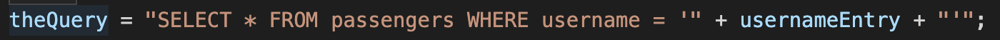
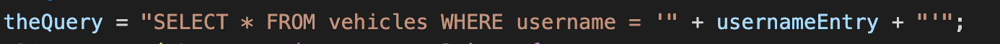
I created a test request that could be entered by a user to gain access to the database
through this attack:
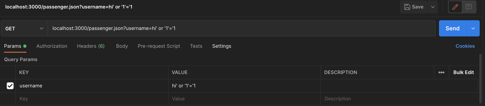
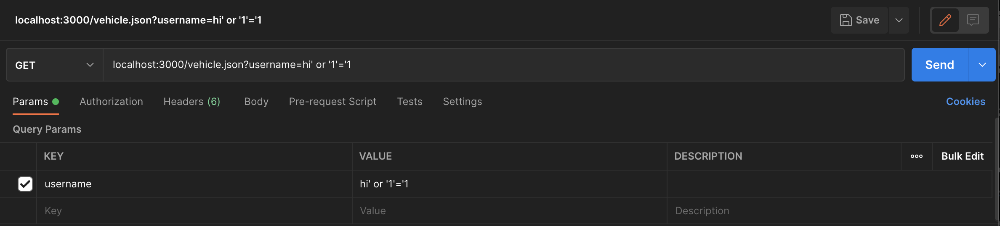
Proof of vulnerability:
Both of the requests from above returned the entire contents of these two tables. This is just one
example of what type of database action an attacker can execute though this type of attack.
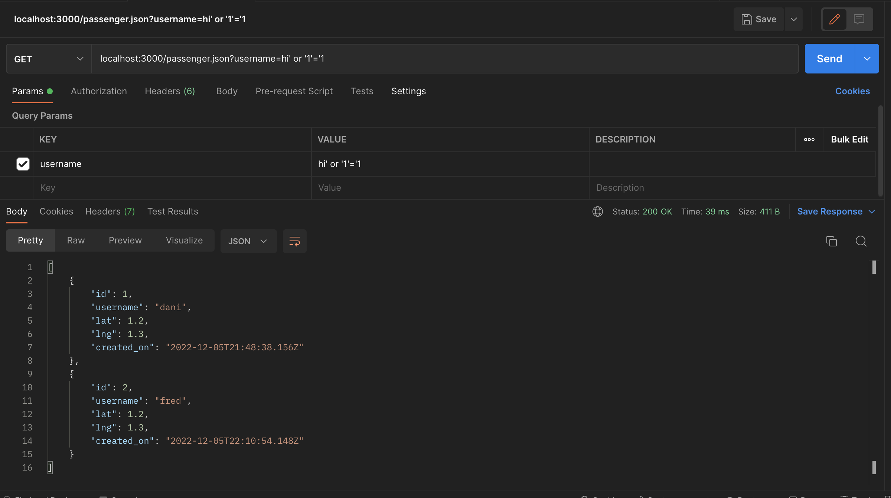
Resolution:
A quick solution that would solve these two vulnerabilities would be to use prepared SQL statements
with parameters. This way user input does not get appended directly to a SQL query and the query
executes safely. Another option would be to only allow input of existing usernames when using
either of these endpoints. This would limit what a user is able to pass to this endpoint before
passing anything in the database.
-
Issue:
DOM Based Cross Site Scripting
Location:
This vulnerability is found in POST /rides where the username field is saved directly to the
database without validation. The objects saved in this endpoint are then displayed in HTML in
GET /, which makes this a DOM based attack.
Severity of issue:
High. Cross site scripting can allow an attacker to access an application as the victim, which could
mean giving them full privileges and control.
Description of issue:
Similarly to SQL injection, I found this issue by catching the common problem in the code and testing it by sending a request
to the server through Postman.
These two code lines are where this vulnerability exists as they are appending user input to a
SQL query directly, and then appending it to HTML code:
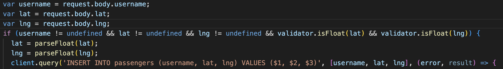
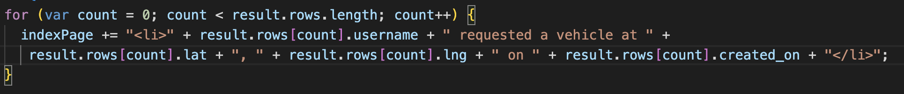
I created a test request that could be entered by a user to save and execute any script through a
user's web browser:
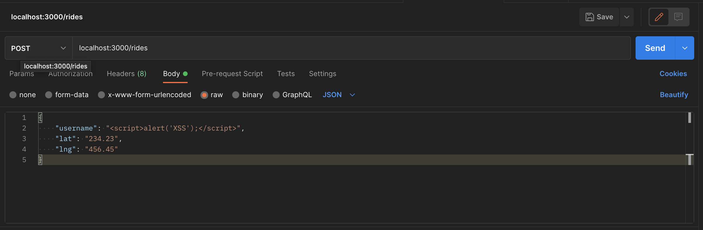
Proof of vulnerability:
The request from above saves the JavaScript code directly to the database. When this is displayed
in a list of passengers, it executes the script and causes this alert to show on my web browser.
This is again just one example of a script an attacker could execute though this type of attack.
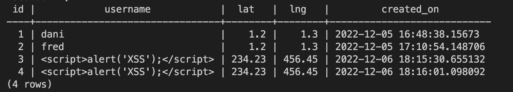
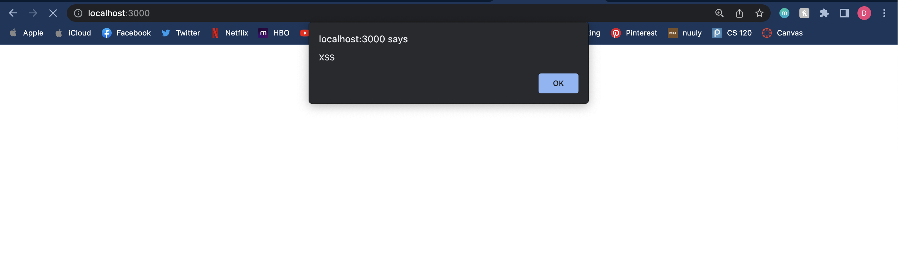
Resolution:
The best way to prevent this type of attack is to sanitize input data. You can filter for alphanumeric
characters or specific HTML tags like <script>.
-
Issue:
Insecure Direct Object References
Location:
This vulnerability can be seen in GET /passenger.json and GET /vehicle.json
endpoints where they are using the username query parameter in the SQL query.
Severity of issue:
High. This type of attack is similar to SQL injection in that the attacker can set the parameter value
directly in the URL and it will get appended to the SQL query. One of the recommended resolutions for
SQL injection could be to only allow list selection instead of a user input box where a user can type.
However, unless we address this problem with the URL parameter, that will not fix the vulnerability.
Description of issue:
The vulnerability exists because of lines 69 and 74 in GET /passenger.json
and lines 84 and 89 in GET /vehicle.json. We do not do any type of authorization on who
the requesting user is and thus allow them to access information on any username they know.
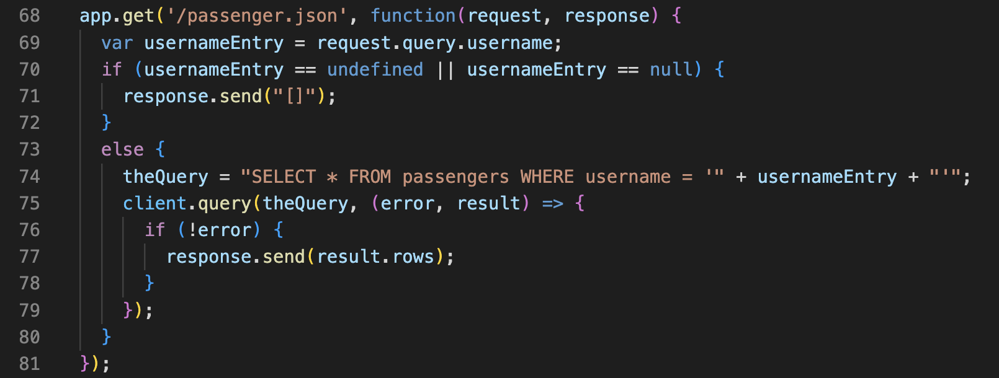
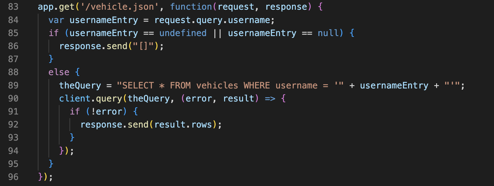
I created a test request that could be entered by an attacker to get any users information.
Here, an attacker could put in any user's name that they know and immediately get their info:
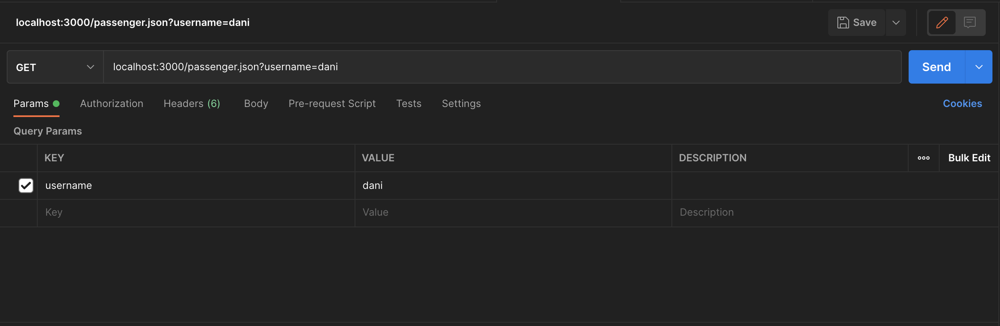
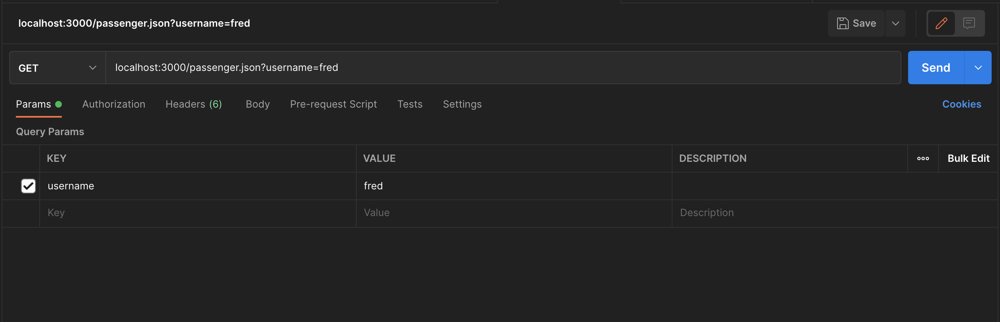
Proof of vulnerability:
The requests from above generate the following results. All the attacker had to do was change the URL:
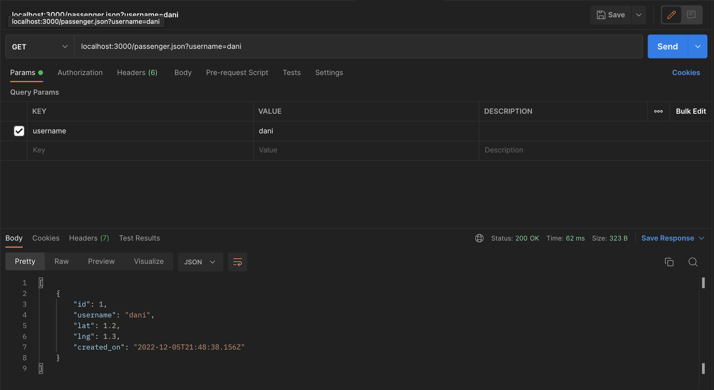
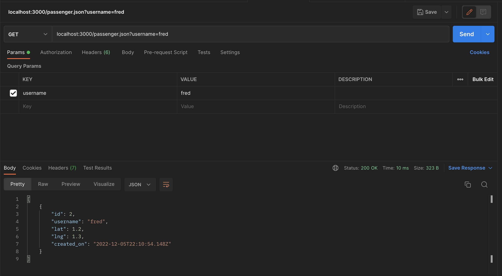
Resolution:
There are a few approaches that would fix this vulnerability. First, you could enforce more security around getting
a user's information such as requiring a password that is encrypted and stored in the database. Another solution
would be to use the information already present in the user's session such as their unique ID if they are logged in.
This would be much harder for an attacker to guess.
Conclusion
I would recommend training employees on common security vulnerabilities often. I'd also
recommend using scanning software such as SonarQube before deploying code to production. This software
will catch possible vulnerabilities and classify their severity so developers can address them.